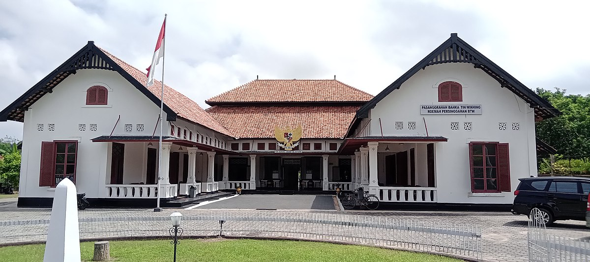
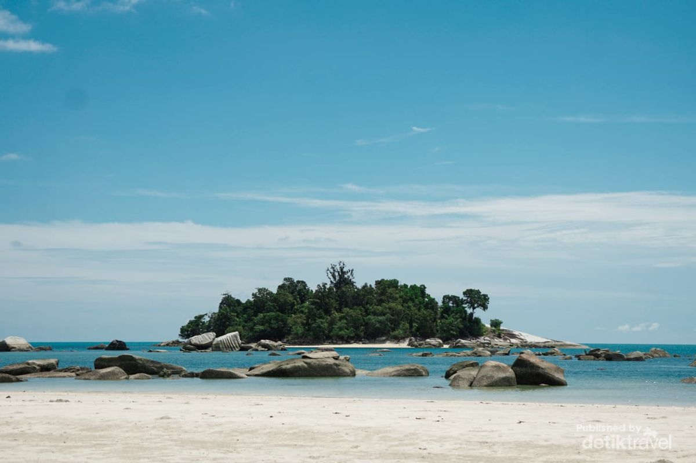
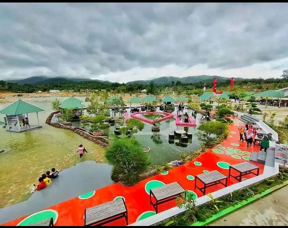
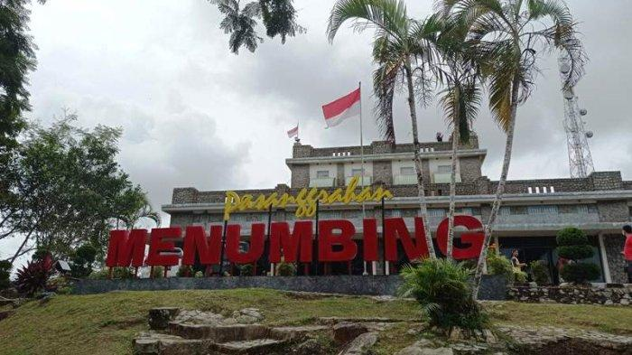
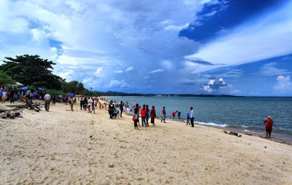

Sejarah

Dibentuk berdasarkan Undang-Undang RI Nomor 5 Tahun 2003 Tentang Pembentukan Kabupaten Bangka Selatan, Kabupaten Bangka Tengah, Kabupaten Bangka Barat, dan Kabupaten Belitung Timur di Wilayah Provinsi Kepulauan Bangka Belitung, yang ditetapkan pada tanggal 25 Februari 2003 dalam sidang Dewan Perwakilan Rakyat Republik Indonesia.
Pada 24 Mei 2003, Drs. H. Syaiful Rachman, MM. dilantik sebagai Penjabat Bupati Bangka Barat oleh Menteri Dalam Negeri RI, Hari Sabarno, bersama 3 tiga Penjabat Bupati lainnya bertempat di Lapangan Merdeka Pangkalpinang. Tanggal ini menandai awal penyelenggaraan pemerintahan di Kabupaten Bangka Barat.
Geografis

Secara topografi wilayah Kabupaten Bangka Barat terdiri dari rawa-rawa dengan hutan bakau dengan wilayah pantai landai berpasir, daratan rendah dan bukit-bukit dengan hutan lebat. Kabupaten Bangka Barat memiliki iklim Tropis Tipe A dengan curah hujan rata-rata 11,8 hingga 370,3 mm/bulan dan suhu udara rata-rata antara 25,7° C hingga 29,0° C.
Suku dan etnis penduduk Kabupaten Bangka Barat terdiri dari suku melayu, keturunan Tionghoa, Jawa, Arab Melayu, Palembang, Bugis dan Batak. Total Jumlah Penduduk s.d. Nopember 2011 adalah 187.453 Jiwa, dan persentase agama yang dipeluk oleh penduduk adalah Agama Islam (90.61 %), Budha (5.56 %), Kong Fu Cu (1,67 %), Kristen (1.56 %), Katholik (0,56 %) dan Hindu (0,03 %).
Mata pencaharian penduduk tersebar di berbagai kegiatan pertambangan, perkebunan, pertanian, perikanan, kelautan, perdagangan barang dan jasa, serta pegawai negeri, BUMN dan swasta. PT. Timah, Tbk., salah satu perusahaan BUMN yang ada di Provinsi Kepulauan Bangka Belitung yang banyak menampung tenaga kerja. Dan di Kota Muntok adalah pusat peleburan biji timah pertama dan terbesar yang ada di Indonesia.
Wisata
Destinasi wisata yang memikat hati dengan keindahan alamnya yang memukau. Terletak di provinsi Bangka Belitung, Bangka Barat menawarkan pesona alam yang tak terlupakan bagi para pengunjung.
Wisata Air Biat

Objek wisata Air Biak memiliki luas 7 hektare. Padahal, dulunya kawasan bekas tambang ini merupakan hamparan tanah gersang yang tak terurus.
Konsep wisata yang dibangun dari Air Biat ini terbilang sangat unik, dimulai dari danau yang dibuat dengan memanfaatkan galian tambang hingga miniatur jembatan ampera Palembang.
Gunung Menumbing

Tempat ini berlokasi di sebuah bukit di wilayah Kota Muntok, Kabupaten Bangka Barat. Di puncak bukit ini terdapat Wisma Menumbing atau Pesanggerahan Menumbing yang merupakan tempat pengasingan mantan presiden Indonesia, Soekarno. Wisma ini memiliki satu bangunan utama dengan beberapa fasilitas umum lainnya. Bangunan tersebut dibangun pada masa penjajahan Belanda, sekitar tahun 1928 sampai 1933.
Pantai Baturakit

Pantai Batu rakit berjarak tempuh sekitar 6 km dari kota Muntok. Pantai ini sangat berdekatan dengan Pantai Tanjung Kalian dan Pantai Asmara.
Selain itu Pantai Baturakit juga terdapat warung – warung wisata yang menyediakan makanan dan minuman ringan seperti otak – otak ikan tenggiri, pempek kulit ikan, ada juga makanan seafood dan kelapa muda. Biasanya pengunjung yang datang bersama keluarga, teman, maupun muda mudi. Di pantai ini sering dijadikan tempat untuk kegiatan-kegiatan yang dilaksanakan oleh Pemerintah Daerah maupun masyarakat.